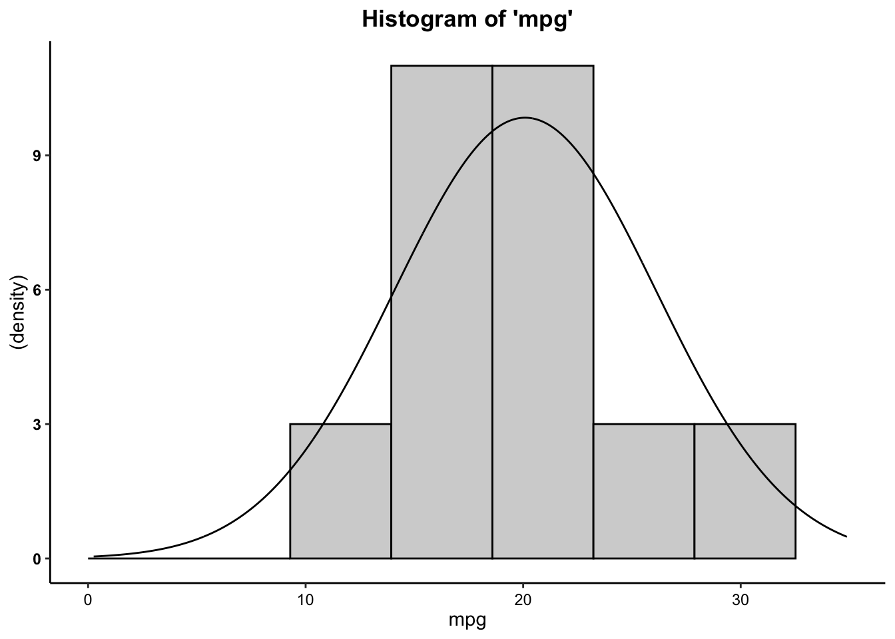
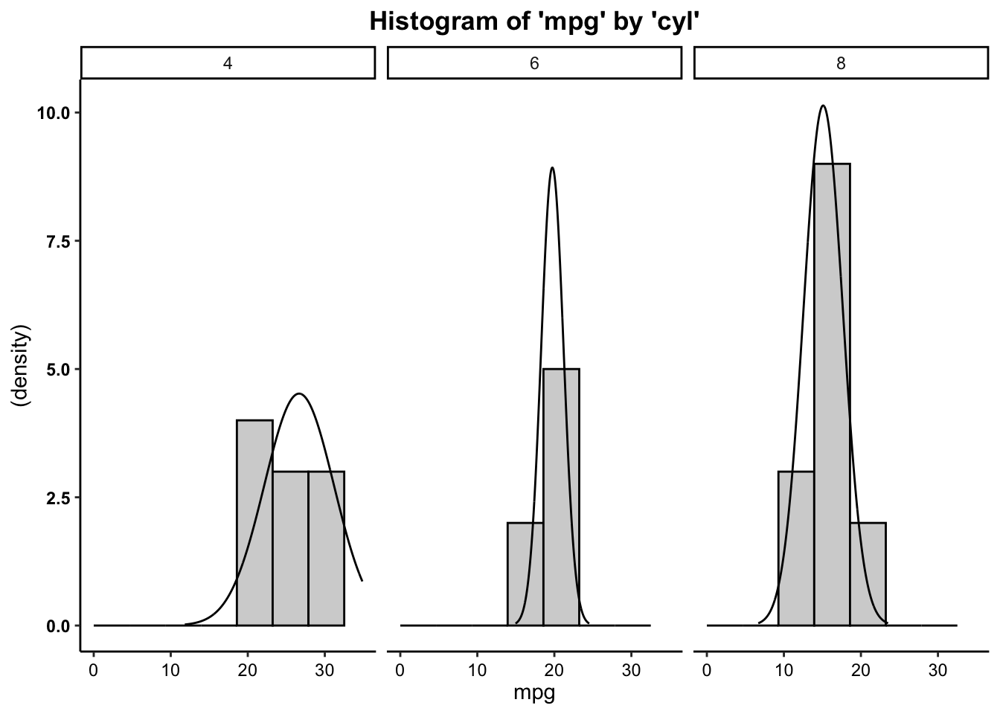
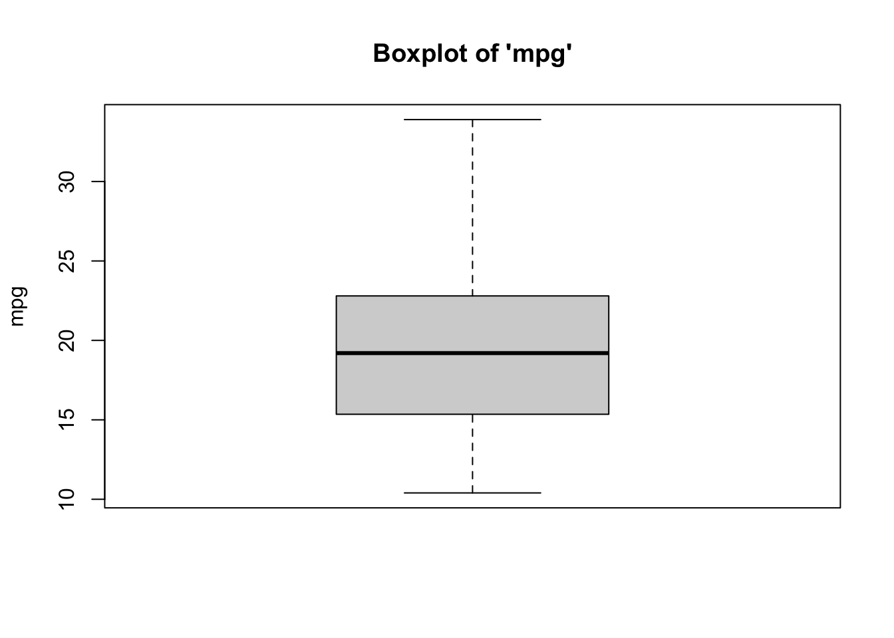
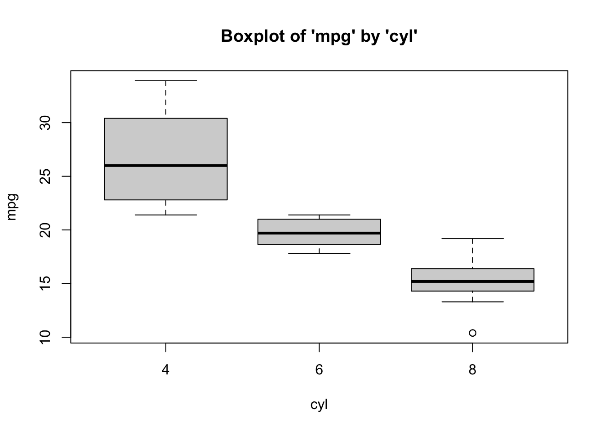
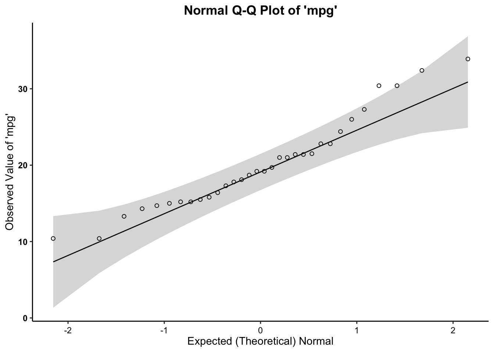
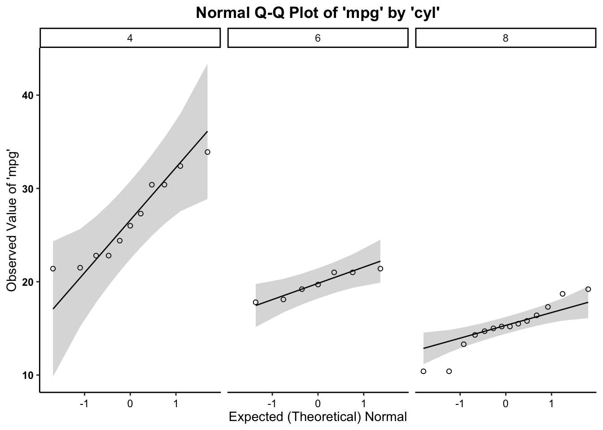

There are various ways to call a number of univariate statistics in
R. As social scientists, the main univariate statistics we are concerned
with are the mean, median, standard deviation, minimum, maximum, and
range. The stock R program comes with the summary function, which,
unfortunately, does not provide the some measures. Therefore,
we use the describe
function from the psych
package. We can call univariate statistics for both the full data set
and a specific variable.
First, let’s load the packages as libraries
And create the data1 object out of the
mtcars data.
For the full data set, we can call univariate statistics as such…
## vars n mean sd median trimmed mad min max range skew kurtosis
## mpg 1 32 20.09 6.03 19.20 19.70 5.41 10.40 33.90 23.50 0.61 -0.37
## cyl 2 32 6.19 1.79 6.00 6.23 2.97 4.00 8.00 4.00 -0.17 -1.76
## disp 3 32 230.72 123.94 196.30 222.52 140.48 71.10 472.00 400.90 0.38 -1.21
## hp 4 32 146.69 68.56 123.00 141.19 77.10 52.00 335.00 283.00 0.73 -0.14
## drat 5 32 3.60 0.53 3.70 3.58 0.70 2.76 4.93 2.17 0.27 -0.71
## wt 6 32 3.22 0.98 3.33 3.15 0.77 1.51 5.42 3.91 0.42 -0.02
## qsec 7 32 17.85 1.79 17.71 17.83 1.42 14.50 22.90 8.40 0.37 0.34
## vs 8 32 0.44 0.50 0.00 0.42 0.00 0.00 1.00 1.00 0.24 -2.00
## am 9 32 0.41 0.50 0.00 0.38 0.00 0.00 1.00 1.00 0.36 -1.92
## gear 10 32 3.69 0.74 4.00 3.62 1.48 3.00 5.00 2.00 0.53 -1.07
## carb 11 32 2.81 1.62 2.00 2.65 1.48 1.00 8.00 7.00 1.05 1.26
## se
## mpg 1.07
## cyl 0.32
## disp 21.91
## hp 12.12
## drat 0.09
## wt 0.17
## qsec 0.32
## vs 0.09
## am 0.09
## gear 0.13
## carb 0.29Whereas, for a specific variable, we can call univariate statistics as such…
## vars n mean sd median trimmed mad min max range skew kurtosis se
## X1 1 32 20.09 6.03 19.2 19.7 5.41 10.4 33.9 23.5 0.61 -0.37 1.07In addition, we can call univariate statistics for a variable but
broken out by groups/categories of another variable. Note, this is the
first step towards bivarate statistics (looking at the relationship
between two variables). We do this by using the describeBy function, where we
list the main variable first, and the grouping/category variable second…
as such…
##
## Descriptive statistics by group
## group: 4
## vars n mean sd median trimmed mad min max range skew kurtosis se
## X1 1 11 26.66 4.51 26 26.44 6.52 21.4 33.9 12.5 0.26 -1.65 1.36
## ------------------------------------------------------------------
## group: 6
## vars n mean sd median trimmed mad min max range skew kurtosis se
## X1 1 7 19.74 1.45 19.7 19.74 1.93 17.8 21.4 3.6 -0.16 -1.91 0.55
## ------------------------------------------------------------------
## group: 8
## vars n mean sd median trimmed mad min max range skew kurtosis se
## X1 1 14 15.1 2.56 15.2 15.15 1.56 10.4 19.2 8.8 -0.36 -0.57 0.68Above, we can see that the mean miles per gallon differs by the number of cylinders in a car (e.g. cars with lower cylinders have, on average, higher miles per gallon).
Skewness is the measure of how close or far a distribution is from symmetry (the normal curve). While it summarizes clustering of scores along the X-axis, with regard to the position of the mode, median, and mean, skewness is also concerned with length/width of the tails of the distribution, relative to one another.
Kurtosis is sometimes referred to as a measure of the peakedness of the distribution, and how different the distribution is from mesokurtic (e.g. middle kurtosis, or the normal curve). Statisticians have argued that kurtosis is, more appropriately, a measure of the height/thickness of the tails of the distribution.
Skewness ranges from \(-\infty\) to \(\infty\). The sign indicates the type of skew, with \(-\) indicating negative skewness, \(+\) indicating positive skewness, and 0 indicating no skew… (AKA symmetry, AKA the normal curve). The cutoffs for skewness are as follows:
High: \(\geq |1|\)
Moderate: \(|1| \geq x \geq |.5|\)
Low: \(|.5| \geq x \geq |0|\)
Statisticians have developed a kurtosis measure that represents excess kurtosis beyond the normal curve (although typical kurtosis ranges from 1 to \(+ \infty\)). This excess kurtosis measure ranges from \(-2\) to \(+ \infty\). Using this metric, negative values represent platykurtic distributions and positive values indicate leptokurtic distributions. Distributions close to a kurtosis value of 0 are considered mesokurtic. We use cutoffs to indicate types of kurtosis, as follows…
Platykurtic: \(-2 \leq x \lt 0\); or \(x \lt 0\)
Mesokurtic: \(x \approx 0\)
Leptokurtic: \(+ \infty \geq x \gt 0\); or \(x \gt 0\)
Beyond using the describe function, you can call
singular desired univariate statistics. Here, we’ll ask for a specific
univariate statistic, one at a time, for the mpg variable.
Below, we’ve added the option for , na.rm=T (alternatively, , na.rm=TRUE), meaning that if
data or observations are missing/NA for the variables we’re working
with, we still want R to calculate the statistic for the non-missing
cases by removing those missing cases (NAs), select TRUE.
## [1] 20.09062## [1] 19.2## [1] 6.026948## [1] 10.4## [1] 33.9## [1] 10.4 33.9Recall that Z-scores are standardized scores – how close or far an observation’s score is from the mean, in standard deviation units. These are relative scores because the standard deviation (as well as the mean) incorporates information from all other observations.
The calculation for Z-scores is:
\(Z = \frac{(X - \mu)}{\sigma}\)
But, the above calculation relies on population parameters \(\mu\), (the population mean) and \(\sigma\), (the population standard deviation), which we often do not have information on. Instead, the calculation, for each observation’s Z-score, is:
\(Z_{i} = \frac{(X_{i} - \bar{X})}{SD}\)
where…
For example, if we wanted to calculate a Z-score for the combined MPG of a Subaru Outback, which is 29 MPG, relative to all other cars in the mtcars data set, we would use the formula:
\(Z_{Outback} = \frac{(29 - \bar{X}_{mtcars\$mpg})}{SD_{mtcars\$mpg}}\)
Luckily, I’ve created a Z-score calculation function, z.calc(), for calculating a
z-score for a value, given the mean and standard deviation for a
variable within a data frame (or a list of values).
data frame (or a values list)variable name for the variable of interestraw scoreas such…
## Raw Score Mean Z Score
## 29.000000 20.090625 1.478256This indicates that the MPG for the Outback is 1.478 standard deviation units above the mean.
Recall that Z-scores are standardized scores – how close or far an observation’s score is from the mean, in standard deviation units. These are relative scores because the standard deviation (as well as the mean) incorporates information from all other observations.
The calculation for confidence intervals is:
\(CI = \mu \pm Z {\sigma}\)
…or, more appropriately, the calculation for a given confidence interval, based on a given confidence level (CL) is:
\(CI_{CL} = \mu \pm Z_{CL}{\sigma}\)
where…
For example, for the 99.9% CI, we would have an associated Z-score (\(Z_{CL}\)) of \(Z_{99.9} = 3.29\), such that, the CI calculation would be:
\(CI_{99.9} = \mu \pm 3.29{\sigma}\)
However, because the above formula relies on \(\sigma\), which is an unknown population parameter – the standard deviation of a variable from the population. Our best guess of that standard deviation population parameter is the standard deviation statistic from our sample, or \(SD\), but our sample standard deviation is based on fewer cases than the the standard deviation from the population . As such, we need to adjust the size of \(SD\) based on our sample size, creating a new value we can plug in in place of \(\sigma\), which is called Standard Error of the Mean: \(SE = \frac{SD}{\sqrt N}\). Moreover, because we are relying on data from a sample, we also need to rely on sample statistics, rather than population parameters \(\bar{X}\) Thus, our new confidence interval calculation becomes:
\(CI_{CL} = \bar{X} \pm Z_{CL}{\frac{SD}{\sqrt N}}\)
or….
\(CI_{CL} = \bar{X} \pm Z_{CL}{SE}\)
Below, we’ve added a CI calculation function, ci.calc(), for calculating a
confidence interval, for a given variable within a data frame (or a list
of values), for a given confidence level.
data frame (or a values list)variable name for the variable of interestconfidence levelas such…
## Mean CI lower CI upper Std. Error
## 20.090625 18.002394 22.178856 1.065424Above, we see the mean for the mpg variable (within the
data1 data frame), the lower and upper bounds for the 95
percent confidence level, and the standard error.
Beyond this, we could read in a values list or a variable within a
data frame using the dollar sign operator. However, when doing this, you
should specify when you’re reading in the confidence level. For example,
if we wanted to calculate the 99 percent confidence interval for the
disp variable from the data1 data frame, then
you could also run it as such:
## Mean CI lower CI upper Std. Error
## 230.72188 174.28307 287.16068 21.90947In addition, you can create a visual representation (plot) of
univariate data using a histogram. For quickly plotting the histogram of
one variable, and to overlay a normal curve on our histogram, we can use
the hst function from the
vannstats package.
The hst function for
plotting one variable (e.g. not broken out by categories of another
variable) takes two arguments:
data set namevariable name for the variable of interestas such…

However, as we begin to move into analyzing bivariate relationships, we may find it necessary to visualize histograms by breaking them out by levels or categories of different variables.
To plot the histogram for mpg broken out by cylinders… use the same
hst function, from the
vannstats package, and simply add a third (and even up to a
fourth argument):
data set namevariable name for the variable of interest(first) grouping variable name(second) grouping variable name
Boxplots also provide a visual representation of the normality of a distribution. The boxplot has a box, a line through the box, two whiskers on either end of the box, and sometimes dots/points outside the whiskers. Below, we get a sense of what each part of the boxplot represents…
To tell if a variable is normally-distributed using the box-and-whisker plot, generally, we want to see that there is some distance between the box and the end of the whiskers, that the box isn’t pushed too close to either whisker, that the median line (dot) is near the center of the box, and that there aren’t many outliers (dots) on the outside of the whiskers.
To plot a boxplot, we use the box function, from the
vannstats package. The function takes two arguments, if you
do not want to break it out by values of another variable:
data set namevariable name for the variable of interest
Further, this function takes a maximum of four arguments:
data set namevariable name for the variable of interest(first) grouping variable name(second) grouping variable nameTo break the above boxplot out by levels of Cylinder, we can do the following…

Much as in the above, we want to assess whether or not our variable follows the normal distribution. As such, the quantile-quantile plot is a visual tool to help us figure out if the empirical distribution of our variable fits (or rather, comes from) a theoretical normal distribution.
We fit a plot of our data/variable (usually on the Y-axis) against ``theoretical data’’ that should occur if the data came from a normal distribution (e.g. Expected Normal on the X-axis). If our data actually fit a normal curve, then the dots on the plot should follow a straight line, or be reasonably close to the line plotted.
Below, we can assess normality to determine whether our variable
follows a normal distribution, using the qq function, from the
vannstats package. The function takes two arguments, if you
do not want to break it out by values of another variable:
data set namevariable name for the variable of interest
This function also takes a maximum of four arguments:
data set namevariable name for the variable of interest(first) grouping variable name(second) grouping variable nameAs such, we can break this plot out by another grouping variable:

R also has a number of functions that work to create random data. To
create random, normally-distributed data, use the rnorm function, which takes a
maximum of three arguments. It should look something like this rnorm(100,0,1), where the first
number (here, 100)
represents the number of cases or data points you want in your random
normally-distributed data. The second argument/number (here 0) is the mean that you want your
data to have. The third number/argument (here 1) is the standard deviation that
you want your data to have.
Note that the rnorm
function takes a maximum of three arguments – and it takes a minimum of
one argument (the number of cases/data points). The default settings for
the rnorm function is mean
of 0 and a standard deviation of 1. This means that rnorm(100) and rnorm(100,0,1) will output
similar means and standard deviations. Similar, not the exact same,
because these data are randomly generated, so the values of the
data points will vary a bunch but still have a mean of 0 and standard
deviation of 1.
Obviously, you can alter the number of cases involved.
## [1] -2.02452663 1.82458652 -1.30666712 -0.20894404 -0.01630827 -0.08479549 1.30624071
## [8] -0.51764612 -0.20937459 -0.60647385or…
## [1] -0.88882500 -0.70646416 -0.03858254 0.88911221 1.62268554 -1.25552800 0.45041774
## [8] -1.74861474 1.23311548 -0.68272461 -0.66755067 1.73238738 -0.40212640 0.67729190
## [15] -0.32924637 0.73394709 -0.35401016 0.24582943 0.49912873 0.68349434 -0.74170956
## [22] 0.13761568 -0.26739548 0.10316936 1.11629959 -0.34968204 -1.42107102 1.02628311
## [29] -1.67043516 1.26394759 1.28719207 -0.47818676 -0.05394055 0.48469438 -1.03551625
## [36] -1.58607750 0.06652060 -1.24242884 0.30367046 -0.14832943 -0.66938970 -0.93290860
## [43] -1.10217358 -0.11740305 0.33854081 -0.15168670 2.22543660 0.46744193 0.24334159
## [50] 0.32875646 -0.99456208 1.06544567 -0.64822294 0.28183713 -0.30418148 1.51573237
## [57] 0.37773978 -0.74876547 0.90761143 0.48331262 0.37919424 0.48390167 1.23851253
## [64] 0.57613885 -0.50670398 0.89047004 -0.89644904 0.02797364 -0.40234116 0.25140453
## [71] 0.28105946 0.63995592 1.02523247 1.08177194 1.05772911 -0.20610738 0.22499896
## [78] -1.01559788 2.14048392 1.59580983 -1.53296506 0.45381239 -0.02681106 -0.47101693
## [85] 0.69534045 -0.84408487 -0.64273850 -0.13408823 -1.36665744 -1.87077347 -1.22268276
## [92] 0.36734049 2.47896736 0.21301194 0.39343368 -1.03957088 0.67143251 -0.36937426
## [99] -1.08008900 -0.87988121or even…
You can also use the assignment operator <- to assign the values of the
rnorm function to an
object:
Then you can run univariate statistics on those data, and even create a histogram for the data:
## [1] 0.01855052## [1] 0.05406527## [1] 1.011277## [1] -3.779253## [1] 3.65536## [1] 7.434613